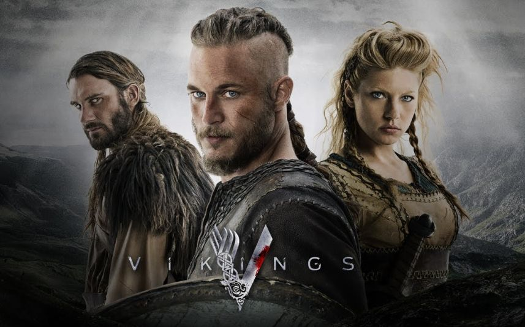

Merhaba, Ben İlknur Nurioğlu. 25 yaşındayım. Ankarada yaşıyorum. Ufuk üniversitesi yönetim bilişim sistemleri mezunuyum. İleride Front-end alanında çalışmak istiyorum.
Vikings
Vikings, bizi okyanusun ötesindeki uzak kıyıları keşfetmek ve onlara baskın yapmak isteyen bir Viking savaşçısı ve çiftçisi olan Ragnar Lothbrok'un acımasız ve gizemli dünyasına götürüyor.